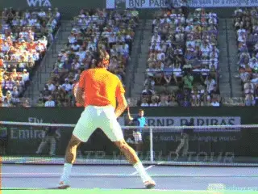
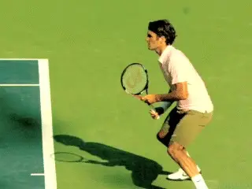
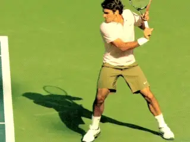
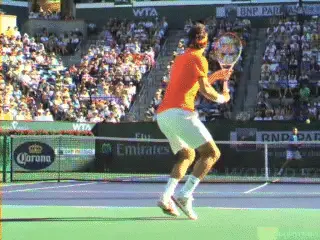
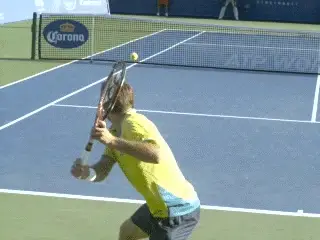

1-2 Rhythm The Single-Handed Backhand¶
1-2 Rhythm¶
The Single-Handed Backhand¶
Nick Wheatley¶
In the first two articles in this series we have looked at a timing concept called 1-2 Rhythm, first for the forehand (link) and then for the two-handed backhand (link).
Does the same concept apply on the one-handed drive? Yes.

Like other groundstrokes, the one-handed backhand is hit with 1-2 Rhythm.What Is it?
1-2 Rhythm breaks down tennis strokes into two parts. Part 1 is the set-up phase which is slower and feels smooth and deliberate. Part 2 is the execution phase, which is faster and has a feeling of explosion and high energy.
The concept isn't based on the analysis of technical elements, which sometimes can lead to paralysis. 1-2 Rhythm overcomes the paralysis issue by creating a different modality for activating strokes on court.
With 1-2 Rhythm players can execute spontaneously at the actual speed of match play, and also increase energy transfer into the strokes. Why? Because players feel how to hit the ball more naturally--the way most elite players actually learn.

In Phase 1 the racket points behind the player with the racket head above the hand--the face can be slightly open.
Although it is a different mode, 1-2 Rhythm is compatible and complimentary with the technical descriptions of the one-hander on TPA. (link.) Interestingly, a feel for better rhythm sometimes leads to spontaneous technical improvements.
One Handed Topspin Backhand
How does 1-2 Rhythm apply to the one-handed backhand drive? There are core similarities to the other strokes, but also important differences in the timing of the two phases. The differences in the timing are due to the fundamental nature of a backhand held only with the dominant hand.
In Phase 1 the hand and racket travel further behind the body compared to the forehand or the two hander. The racket head at the completion of Phase 1 is actually pointing behind the body at the sideline to player's right.At the completion of Phase 1, the racket head is also above the height of the hand. The racket face may be on edge, but for Roger Federer and others it is actually slightly open.

Phase 2: Acceleration begins with the racket drop and continues in an explosion through the hit.Phase 2
The forward swing begins at the start of Phase 2. The racket acceleration begins as the racket head starts to drop and builds from there.This acceleration is further increased at the pro level by the common use of closed stances, set up by a diagonal cross step.This allows the hips and the shoulders to rotate more than with a neutral stance at the start of the forward swing--though it is important to note that there is still far less rotation than on the forehand or the two-handed backhand.
However, the 1-2 rhythm principle works equally well with neutral or even open stances. These stances are usually more applicable for lower level players.
Compare the Phases on the one-hander to the forehand or the two-hander where the hand and racket stay on the hitting side throughout the motion in the purest ATP versions of the strokes.
There is another important difference. On the one-hander the racket face doesn't close or tilt downward as it does on the other two strokes.

With the ATP forehand and two-hander, the hand and racket stay on the player's hitting side.But the racket does slow down or even pause fractionally at the end of this first phase. This is more like the two-hander than the forehand.
Because players like Federer or Richard Gasquet hit their backhands with such flowing style, it's sometimes difficult to recognize the explosiveness involved. But many of the most explosive backhands at the highest levels of the game are in fact one-handers.
The high energy transfer in Phase 2 may be more apparent in a player like Stan Wawrinka. When he hits a winner it seems like a canon. In any case, some the highest backhand velocities at all levels are generated by one handed players.
The trick to exploding in phase two is to use the front hitting shoulder to swing the arm and racketwithout over rotating the body.This forward action is often dramatically paired withthe left arm moving in the opposite directionwith an explosive feel of its own.
As with all shots, 1-2 Rhythm can be activated with simple keys on the court--usually in the form of one word or image for each phase. For example, the keys might be as simple as the numbers "1-2" which the player says to himself.

Stan: a 1-2 Rhythm that resembles firing a canon.
The player should associate the physical feelings of the two technical phases with the key words, feeling the deliberate coiling during "1" and the explosive acceleration of the hitting arms with "2."
The duration of "1" should be longer, corresponding with the slower first phase. "2" should be shorter in duration and possibly have a more aggressive tone inside the player's mind.
Every player should find the words that work for him, but here are some other examples that I have found powerful and effective. The first word is "Smooth." The second word is "Explode." Another combination is "Slow" then "Fast."
As with the other shots, hitting loose and relaxed is key, and will allow the follow-through to happen naturally. When 1-2 Rhythm is really working, technique, feel, and timing are all part of the exquisite experience of hitting a powerful, well struck one-handed drive. Stay tuned next for the slice!

Nick Wheatley is an LTA Performance Coach and
His junior teams, the Hawker Jets, have won 44
competitions since formation, and over the last 2
years alone, his junior players have won 19
singles tournaments between them at county level.
He has been ranked in the top 75 nationally in 35
and over singles and in the top 5 in Surrey
county. Nick has done video analysis for numerous
players at all levels, including former British
Top 10 player Marcus Willis.
His unique teaching video series, covering every
aspect of the game, is available on his website
You can also